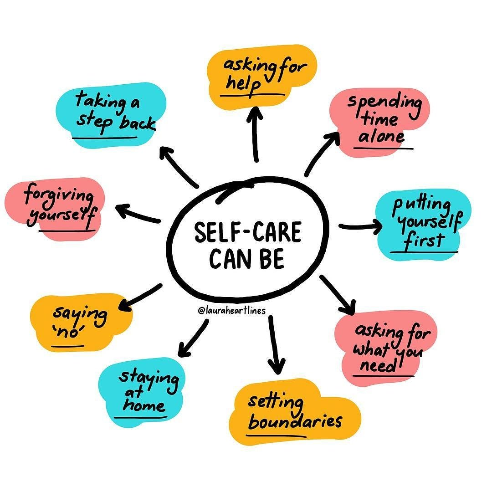

The Importance of Self-Care in Mental Health

Self-care is often overlooked, but it plays a crucial role in maintaining good mental health. In this blog post, we'll explore why self-care is essential and provide practical self-care tips and strategies. Taking care of your mental and emotional well-being is just as important as taking care of your physical health. Self-care can help reduce stress, improve mood, and enhance your overall quality of life.
Understanding Self-Care
Self-care involves taking actions to prioritize your own well-being. It's not selfish; it's self-preservation. This can include setting boundaries to protect your time and energy, practicing self-compassion, and engaging in activities that bring you joy and relaxation. Recognizing the importance of self-care is the first step in nurturing your mental health.
Practical Self-Care Tips
We'll discuss practical self-care activities such as taking breaks, setting boundaries, practicing gratitude, and engaging in hobbies. Taking short breaks throughout the day to relax and clear your mind can help you stay focused and reduce stress. Setting boundaries with work, social commitments, and technology use can prevent burnout and promote a healthier work-life balance. Practicing gratitude by keeping a journal of the things you're thankful for can boost your mood and perspective. Engaging in hobbies you enjoy, whether it's painting, reading, or hiking, can provide a sense of fulfillment and relaxation.
The Mind-Body Connection
Explore how self-care practices can positively impact your mental health and reduce stress and anxiety. When you take care of your mental and emotional well-being, you're better equipped to handle life's challenges and uncertainties. Reducing stress through self-care activities can have a direct positive impact on your physical health as well, such as lowering blood pressure and improving sleep quality.
Creating a Self-Care Routine
Learn how to create a personalized self-care routine that aligns with your needs and lifestyle. Building a self-care routine that works for you is essential. It should include a mix of daily habits and occasional activities that make you feel happy and balanced. Experiment with different self-care practices to discover what resonates with you the most and incorporate them into your daily life.